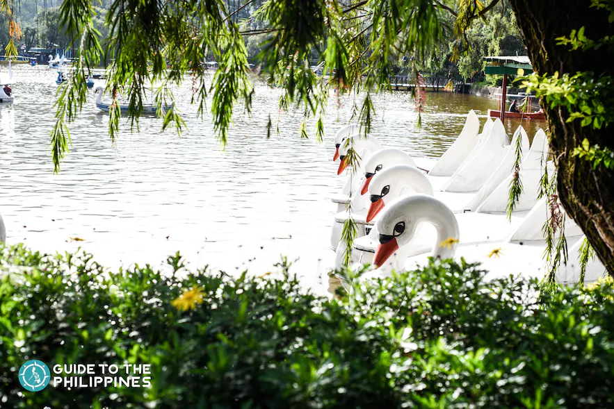
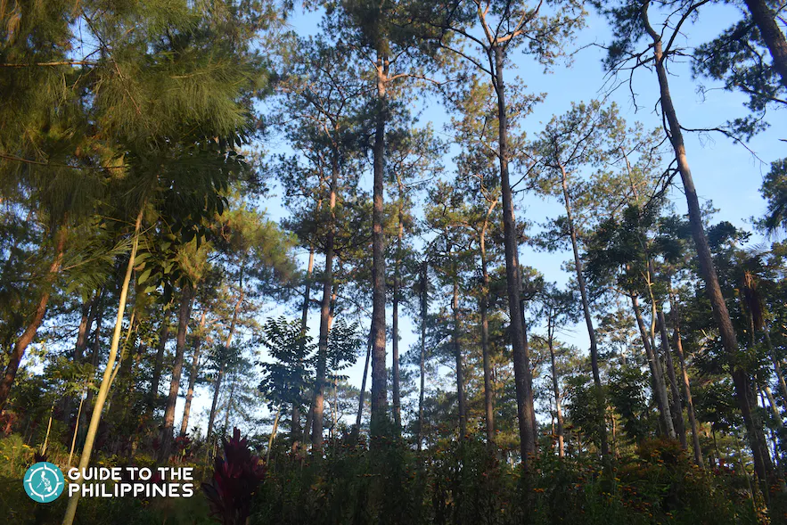
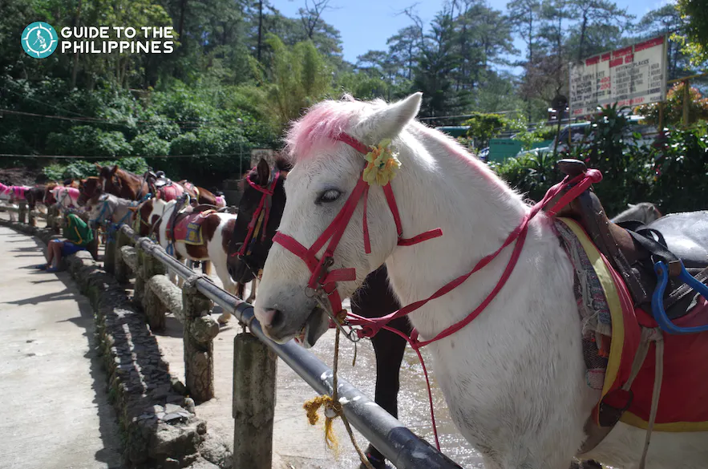
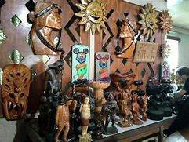
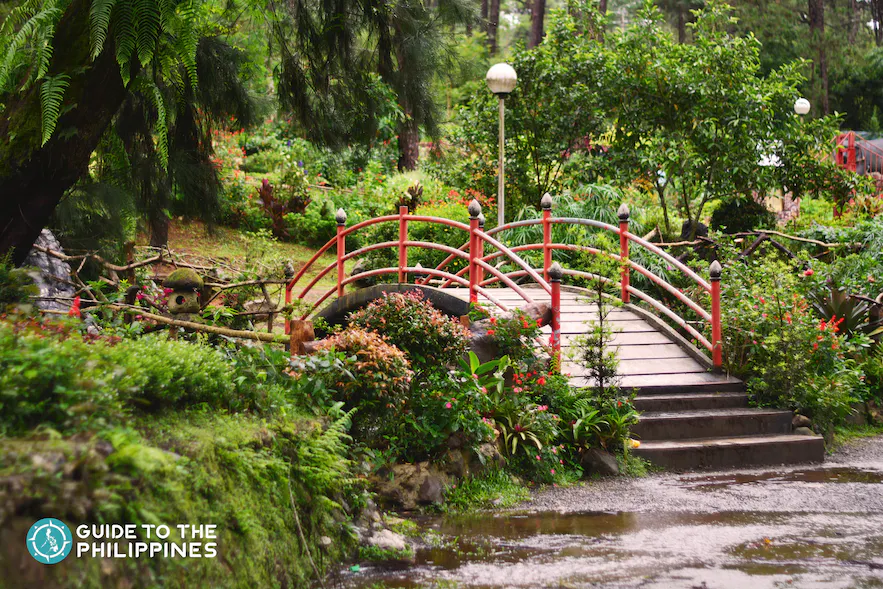
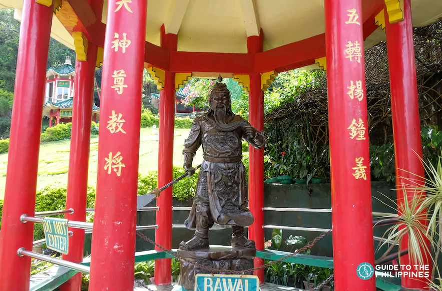

BURHAM PARK
Burnham Park is an open green park at the heart of Baguio. The park's lush greeneries and blooming flowers make you forget that you are in the middle of a highly urbanized city.

CAMP JHON HAY
If you have limited time to tour Baguio attractions and you want to visit just one place, head to Camp John Hay. The camp was a former rest and recreation facility for American soldiers.

MINES VIEW PARK
Baguio was a former mining town in the early 20th century. To get a glimpse of that past, you have to visit Mines View Park. This park sits on a ridge on the northeast side of Baguio. Exploring the park is one of the recommended leisure activities in Baguio.

STRAWBERRY FARM IN LA TRINIDAD
Visiting the strawberry farm in nearby La Trinidad along with other attractions is one of the top experiences you can't miss out on when you're in the Summer Capital.

BAGUIO NIGHT MARKET
Baguio is a famous bargain shopping hotspot. If you want to put your haggling skills to the test, there is no better place than the Baguio Night Market. This bargain-hunting haven is every thrifty fashionista's dream.

HORSEbACK RIDING AT WRIGTH PARK
Wright Park is one of the many scenic parts of Baguio. It is a quiet promenade with blossoming flowers, a pool lined with pine trees, and a long stairway that leads visitors to a riding circle.

Ifugao Woodcarver's Village
Woodcarver's village showcases the indigenous aesthetics of the region, its natural environment, and the rich cultural heritage of the Cordillerans through wood carving.

BAGUIO BOTANICAL GARDEN
The Baguio Botanical Garden is one of the most beautiful places in Baguio and provides a much-needed tranquil space amid bustling Baguio City. In 2009, the garden was renamed Centennial Park in celebration of Baguio's 100th year as the Summer Capital of the Philippines.

BELL CHURH
Atop the hills near the borders of Baguio and La Trinidad sits the Bell Church, the center of the religious and cultural activities of Baguio's Chinese-Filipino community.

EASTER WEAVING ROOM
To complete your Baguio city culture and countryside tour, stop by the Easter Weaving Room. Established in 1909, Easter Weaving Room is as old as Baguio itself.